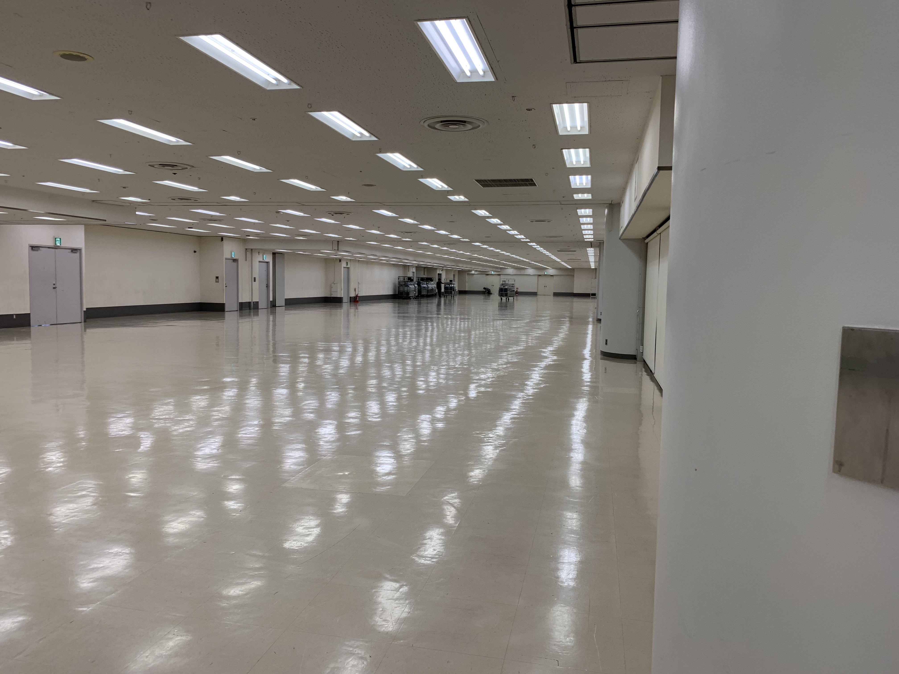
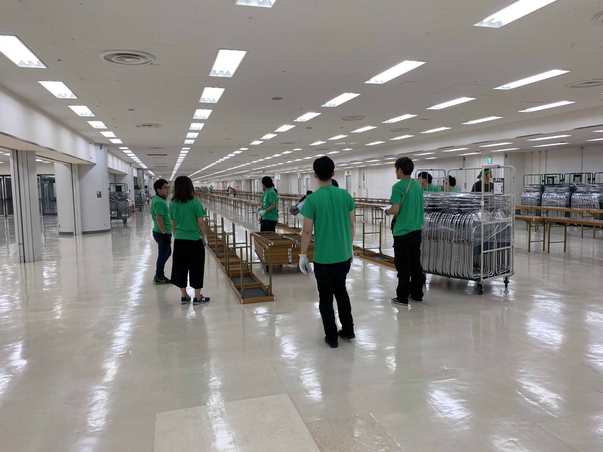

技術書典５にスタッフとして参加した
ひょんなことから 技術書典５ にスタッフとして参加させてもらいました．
早朝の机椅子のセッティングから始まり，サークル受付，列整理，会場見回りなど色々と体験させてもらい，技術書典の熱気を体感することができました．スタッフの方々とも色々な話ができ，とても楽しかったです．
サークルの皆様，スタッフの皆様お疲れ様でした！！！
これにて #技術書典 閉会します。ご来場、誠にありがとうございました。総来場者数は のべ10341人、うちサークル・スタッフ等関係者は889人でした。
— 技術書典公式アカウント (@techbookfest) October 8, 2018
凄まじい熱気感．同人イベントは初参加だったのもあり，全てに圧倒されていました（笑）．
【News Up 文系も知りたい「技術書典」 】「技術書典」この４文字を見て「なにかの辞典？」などと思ったあなたは、永遠の文系。心を熱くするのが、日本のＩＴエンジニアたちです。技術者たちの「コミケ」とも言われ、最近、注目のイベントの魅力に迫りました。https://t.co/KDBVCx5wdS
— NHKニュース (@nhk_news) October 11, 2018
NHKニュースにも取り上げられていました．
会場は池袋サンシャインシティ2F 展示ホールDというところで，とてつもなく広かった．セッティング前の様子はこんな感じ．


技術書典で散財する予定です💸😇
— tanakaworld 🧢 (@_tanakaworld) September 26, 2018
とは言っていたものの，なんだかバタバタしていて結果的に散財するには至りませんでしたが，事前にウォッチしていた本はゲットできました．
人はなぜ技術書典に出すのか
人はなぜ技術書典に出すのか？という件、自分もその本質を理解していない気がする。今回の技術書典は足を運ぼうと思う https://t.co/uV8TKVJNFb
— tanakaworld 🧢 (@_tanakaworld) August 26, 2018
当日を終えた直後は，サークルの方々の熱気に圧倒されて「すごかった（小並感）」くらいの感想しか思い浮かびませんでした．
しかしその後，一週間経って自分も出してみたいという気持ちがジワジワ湧き上がってきています．サークル参加された方のツイートやブログ読んだりしていると，とても楽しそうだなぁ．．．と思い始めました．さらにサークル参加していた同僚の話をきいているとそれがより一層高まってきます．書典の数週間前の暗雲立ち込める姿と，終了後サウナから出てきたかのようなリフレッシュした姿がそれを物語っているな，と感じました．
「同棲を支える技術」（仮）
今のところこういう感じのことについて書いてみたいなと思っています．彼女と同棲をはじめてもうすぐ１年が経とうとしています．いちエンジニアとして日常をハックしたいというのを日々考えているのですが，それを１冊の本にまとめられたら面白そうだなと．イラストやマンガを載せて本にしている方々も印象的だったので織り交ぜたい．（僕はピクセル画しか描けないので，誰かサポートしてくれる方募集中です😇）